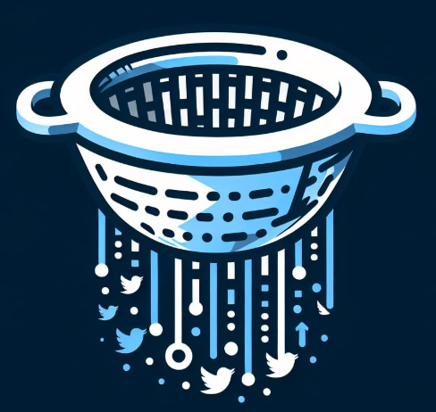

مصفاة
تفعيل الفلتر
تخصيص الاختيارات
حالة نموذج تحليل الصور:
جاري التحميل...
تخصيص الاختيارات
شركيات
عنف
قمار
مسكرات
حساسية تحليل الصور:
0.15
واجهة برمجة تحليل النصوص (Claude API)
مفتاح API:
حفظ المفتاح
اختبار الاتصال
اختبار مباشر API
حفظ
إغلاق
:الكلمات المفتاحية
حفظ الكلمات المفتاحية
اختبار التنبيه
اختبار تحميل المحتوى
الإحصائيات
عدد التغريدات المحجوبة: 0
عدد المنشورات المحجوبة: 0
رسالة التنبيه
إغلاق